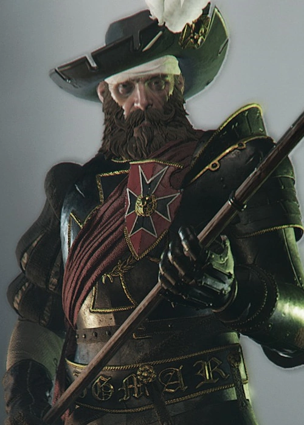

Markus Kruber in blackened plate armour with gold outlines, characteristic of outfits of veteran mercenaries.
Markus de Mandelot
(aka Markus Kruber)
A skilled soldier, exceptional combat leader, and avid hat-lover, Markus Kruber was an Empire sergeant and a core member of the famed Ubersreik Five. The Ubersreik Five is a group of five adventurers who participated in the fierce defense of the town of Ubersreik, from which the group took their name.
As part of the Ubersreik Five, Markus has fought to protect the Reikland against the forces of Chaos during the End Times. His ancestral heritage has recently been revealed and he has received the blessing of the Lady of the Lake. As such, he is 'reborn' as a Grail Knight, under his new reclaimed name Markus de Mandelot. Even being practically nobility, he has not lost his amicable personality and his devoted loyalty.